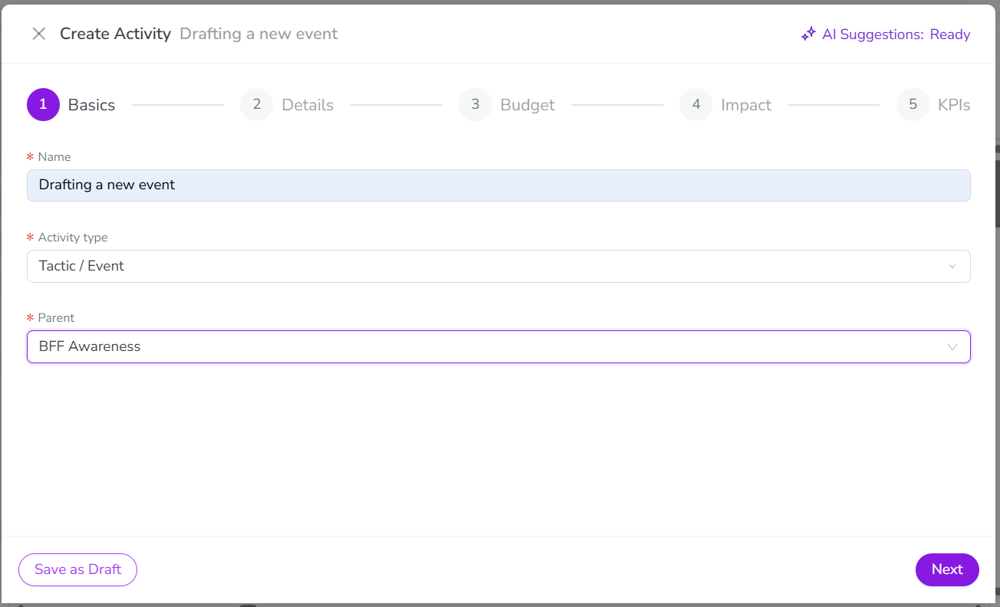
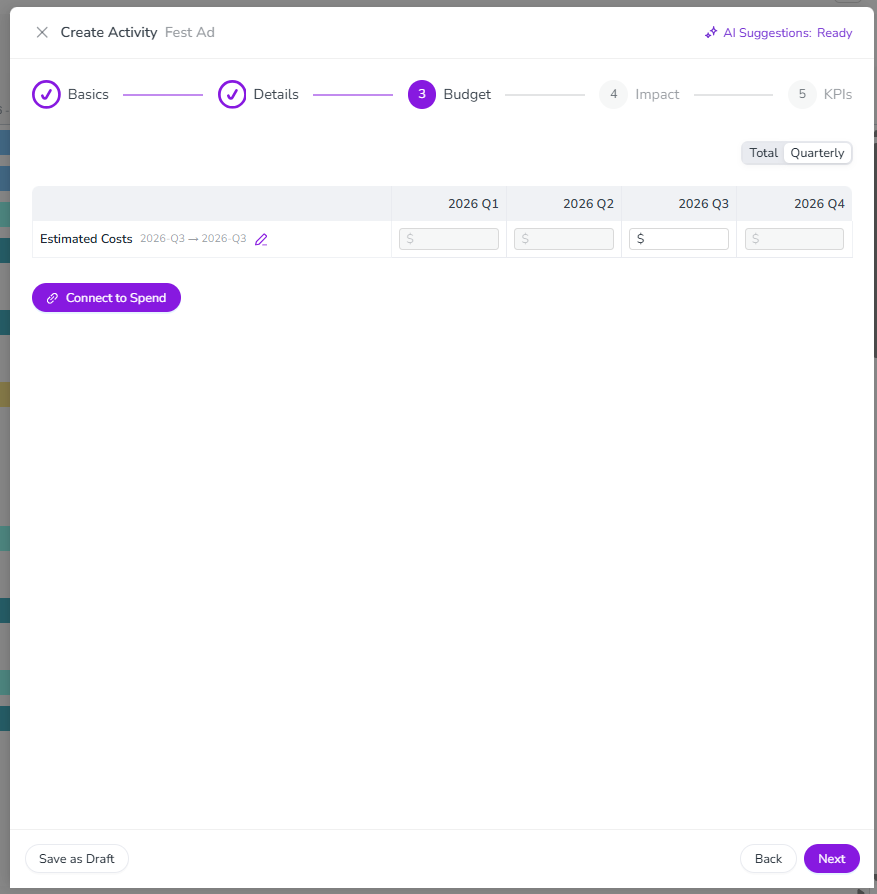
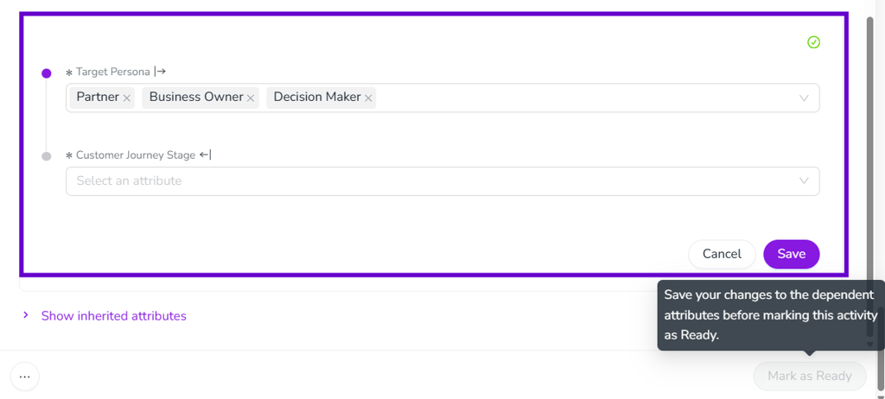
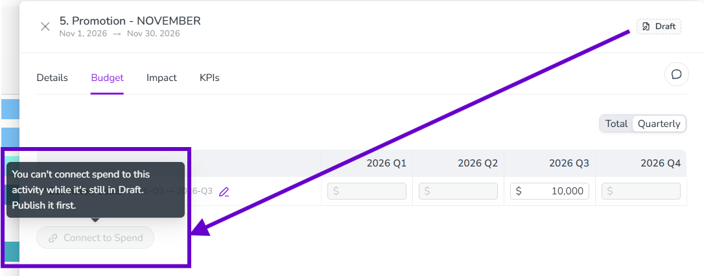
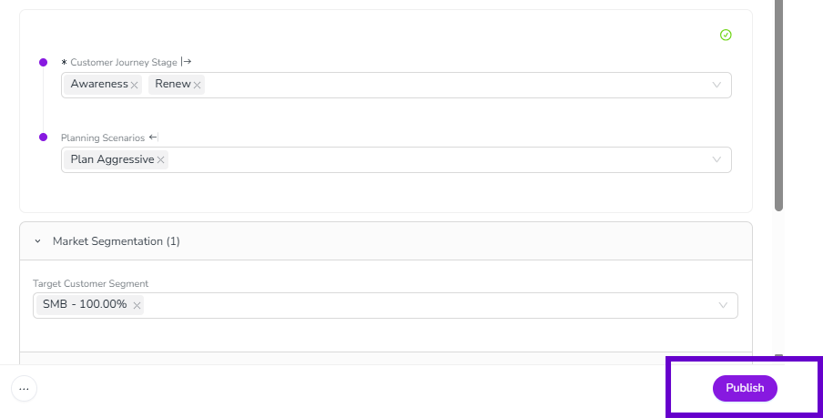
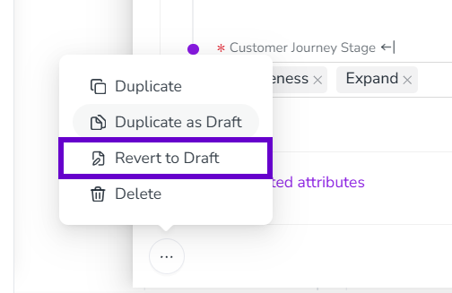
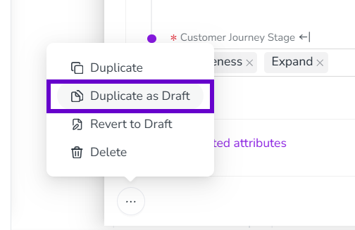

Work with activity drafts (Preview)
You can save a new activity with just filling in its Name, Activity type, and Parent, instead of needing every required field completed up front.
Create a draft activity
Save an activity as a draft
Start creating a new activity. The Create Activity setup assistant opens with the Basics page displayed.
On the Basics page, enter a Name for the activity and use the Activity type and Parent lists to make your selections.
Click Save as Draft.
{kind=link}

The activity is created in the activity hierarchy with a Status of Draft.
{kind=link}

Edit a draft activity
To add or update any of a draft's remaining details, open the draft's details panel the same way you would for any other activity. For instructions, see Edit activities.
While an activity is in Draft status, any attribute marked required (*) is softly enforced: the field still shows as required, but you can save and continue without completing it.
{kind=link}

{kind=link}

Publish a draft
Publish a draft activity
Open the draft activity's details panel.
Click Publish.
If any required information is missing, Uptempo highlights the incomplete fields. Complete the missing fields, then click Publish again.
{kind=link}

Once an activity is published, its Status changes to Published.
You can also revert a published activity back to a draft, if you need to continue editing it.
Revert a published activity to a draft
Open the activity's details panel.
Hold the pointer on
 Actions and click Revert to Draft.
Actions and click Revert to Draft.
{kind=link}

The activity's Status changes back to Draft, so you can continue editing it before publishing it again.
Differentiate drafts from published activities
Draft activities live in the existing activity hierarchy alongside published activities, following the same hierarchy sorting order and access control policies as any other activity. Because a draft occupies the same place a published activity would, Uptempo visually differentiates it: a draft activity displays a drafts icon beside its name, and its Timeline bar shows only an outlined border in its type's color, instead of a solid colored bar.

Duplicate an activity as a draft
Duplicate an activity as a draft
In the
 Activities section, find the activity you want to duplicate, and click on its name. The activity's details panel opens on the right.
Activities section, find the activity you want to duplicate, and click on its name. The activity's details panel opens on the right.Hold the pointer on
Actions and click Duplicate as Draft.
{kind=link}

The new activity is created with a Status of Draft, with a copy of the original activity's data. Edit the copy as needed before publishing it.